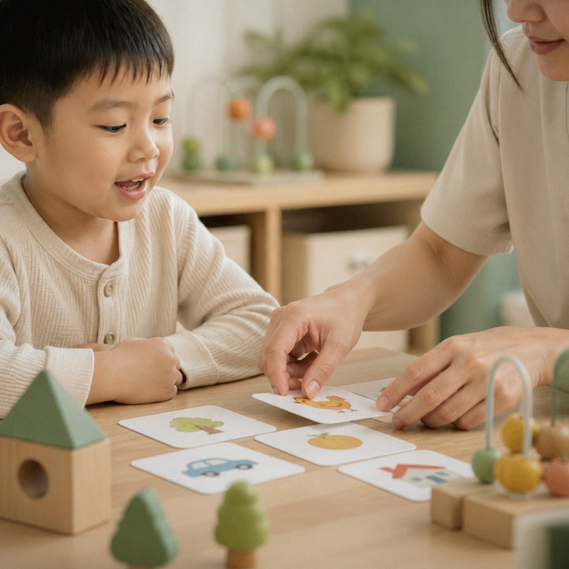

Kids Speech Therapy
兒童語言治療
從語言發展、評估時機、構音發音到在家陪伴，整理家長最常需要的兒童語言治療資訊。先找到孩子目前最接近的問題，再進一步閱讀文章。

語言發展與里程碑
0–6 歲語言發展、1 歲與 2 歲常見疑問、雙語家庭與發展遲緩基礎觀念。
Evaluation警訊與評估
孩子說話比較慢、聽不懂、互動少時，如何判斷是否需要安排語言治療評估。
Speech Sound構音與發音
孩子咬字不清、發音不準、陌生人聽不懂時，可以怎麼觀察與協助。
Home Practice在家陪伴
把語言刺激放進共讀、遊戲、吃飯與日常對話，讓練習更自然。
Therapy Guide認識療育
了解語言治療在做什麼、療程如何安排，以及家長如何和治療師合作。
Resources補助與在地資源
早療通報、聯合評估、補助與特殊教育資源的官方入口整理。